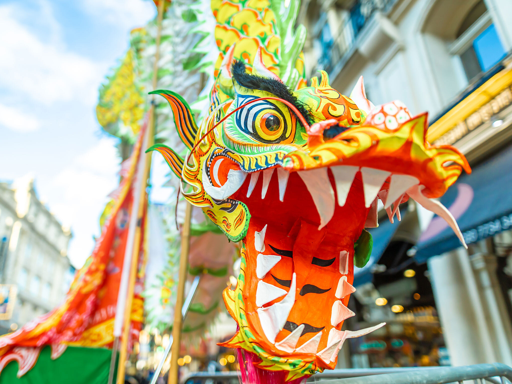
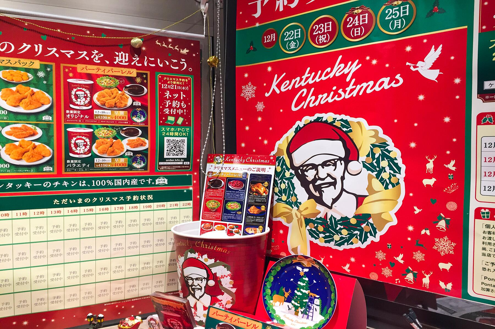

<!DOCTYPE html>
<html lang="en">
<head>
    <meta charset="UTF-8">
    <meta name="viewport" content="width=device-width, initial-scale=1.0">
    <meta http-equiv="X-UA-Compatible" content="ie=edge">
    <title>Document</title>
</head>
<body>
    
</body>
</html>


<!DOCTYPE html>
<html lang="en">
<head>
    <meta charset="UTF-8">
    <meta name="viewport" content="width=device-width, initial-scale=1.0">
    <meta http-equiv="X-UA-Compatible" content="ie=edge">
    <title>Christmas Celebrations</title>
    <link rel="stylesheet" href="style.css" type="text/css" />
</head>
<body>
    <header>
      <h1>Christmas celebrations </h1>  
      <h4>Around The World</h4>
      <h4>My top 3 Christmas celebretions</h4>
    </header>

        <section class="gallery">
        <div class ="imageCard">
            
            <div class ="cardtext">
                <cite>Chinese New Year</cite>
                <cite>Chinese New Year (also called Lunar New Year and celebrated in many countries outside China), starts on the second new moon after the winter solstice. The exact date varies from year to year, but it always falls during the winter. In China, the holiday lasts for weeks!

Celebrations for Chinese New Year take all kinds of forms, from enormous public fireworks displays and exciting lion dances to special family dinners at home and giving children money in red envelopes for good luck. This vibrant, thriving holiday with ancient roots brings warmth and cheer to winter every year!</cite>
                <p>Image by <a href="https://www.timeout.com/london/chinese-new-year-in-london">Alex Sims</a>
                from <a href="https://www.timeout.com/london/chinese-new-year-in-london">timeout</a></p>
            </div> <!-- Close "cardText" class -->
        </div> <!-- Close "imageCard" class -->
        
        <div class ="imageCard">
            
            <div class ="cardtext">
                <cite>KFC for Christmas</cite>
                <cite>In the United States, we associate Christmas with ham or figgy pudding, but in Japan, it’s all about Kentucky Fried Chicken. An estimated 3.5 million Japanese families eat fried chicken on Christmas Eve thanks to a marketing stunt by KFC in the 1970s called Kurisumasu ni wa Kentakkii (“Kentucky for Christmas”). Christians make up a very small percentage of the Japanese population, so this campaign made up for a lack of Christmas holiday traditions. The KFC Christmas Meal is so popular, many customers pre-order their dinners — which include fried chicken, cake and champagne — months in advance.</cite>
                <p>Image by <a href="https://www.fodors.com/world/asia/japan/experiences/news/the-surprising-reason-kfc-is-japans-biggest-christmas-tradition">Katja Gaskell</a>
                from <a href="https://www.fodors.com/world/asia/japan/experiences/news/the-surprising-reason-kfc-is-japans-biggest-christmas-tradition">fodors</a></p>
            </div> <!-- Close "cardText" class -->
        </div> <!-- Close "imageCard" class -->
        
         <div class ="imageCard">
            
            <div class ="cardtext">
                <cite> Christmas </cite>
                <cite>When you’re talking about December holidays, you can’t forget Christmas. Christmas is an annual festival commemorating the birth of Jesus Christ, observed primarily on December 25 as a religious and cultural celebration among billions of people around the world. A feast central to the Christian liturgical year, it is preceded by the season of Advent or the Nativity Fast and initiates the season of Christmastide, which historically in the West lasts twelve days and culminates on Twelfth Night. Christmas Day is a public holiday in many countries, is celebrated religiously by a majority of Christians, as well as culturally by many non-Christians, and forms an integral part of the holiday season organized around it. The traditional Christmas narrative recounted in the New Testament, known as the Nativity of Jesus, says that Jesus was born in Bethlehem, in accordance with messianic prophecies. When Joseph and Mary arrived in the city, the inn had no room and so they were offered a stable where the Christ Child was soon born, with angels proclaiming this news to shepherds who then spread the word.</cite>
                <p>Image by <a href="https://pngtree.com/free-backgrounds-photos/merry-christmas">pngtree</a>
                from <a href="https://pngtree.com/free-backgrounds-photos/merry-christmas">pngtree</a></p>
            </div> <!-- Close "cardText" class -->
        </div> <!-- Close "imageCard" class -->
        
      
         